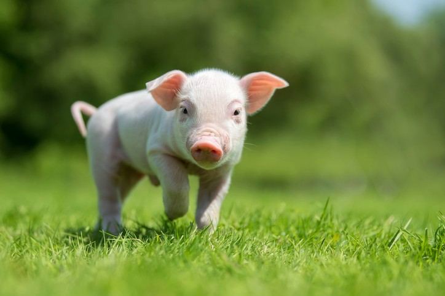

- 
My name is Peter Roquemore and here's my portrait
Here are just a few of the lies I may tell you

Well, those would all be lies and if you believed me then you are a fool.
Enough with the lies. Here are some of my most honest truths
| Favorite Foods | Where to Eat | When to Eat |
|---|---|---|
| Breakfast Burritos | Sitting On the Couch | Around Noon |
| Birthday Cake | At A Skating Rink | Evening |
| PBJ Sandwich | On A Hike | Half Way Through |